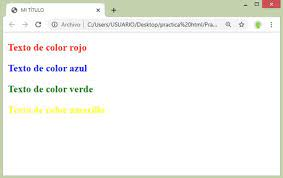

Llamamos estilo del texto a todo aquello que tiene que ver con su presentación: Es decir, color, tamaño, tipo de letra (o fuente), alineación, sangrías, márgenes, y otros elementos que sin ser el texto propiamente dicho, contribuyen a que se vea de una determinada manera.
El lenguaje HTML basa su filosofía de desarrollo en la diferenciación. Para añadir un elemento externo a la página (imagen, vídeo, script, entre otros.)
Este no se incrusta directamente en el código de la página, sino que se hace una referencia a la ubicación de dicho elemento mediante texto.
Lo normal es definir todos estos parámetros mediante el lenguaje CSS, ideado para este fin, y mediante el cual podemos definir el estilo de una sola etiqueta o de varias a la vez.
Aunque lo habitual es emplear el código CSS, para estas tareas, el lenguaje HTML conserva también una serie de etiquetas y atributos que pueden utilizarse para definir el estilo de los textos. Tal como hemos explicado anteriormente, esto se debe a que el lenguaje CSS se creó más tarde, y por tanto HTML ya tenía anteriormente etiquetas de estilo. No está de más conocer estas etiquetas, aunque sean poco usadas (ya que normalmente usaremos código CSS). Es por esto por lo que la mayoría del texto que sigue en esta página está en color azul, para indicar que lo que aquí explicamos no es imprescindible, aunque no está de más saberlo.
El atributo face="Tipo de letra" muestra el tipo de letra, sus valores son el nombre del tipo de letra que queremos usar. Este tipo de letra debe tenerlo instalado el usuario en su ordenador, de no ser así mostrará el tipo de letra que se muestra por defecto. Podemos poner varios tipos de letra separados por comas, En este caso el navegador comprobará si dispone del primero, y si no es así, pasará al segundo, y así sucesivamente.
El tamaño de letra se contola con el atributo size="num". El valor es un número del 1 al 7 siendo el 1 el valor más pequeño y el 7 el más grande. El valor predeterminado es el 3. También podemos marcar el valor de forma relativa, mediante los valores +1, +2, -1, -2, etc. en este caso el tamaño será mayor o menor que el precedente, en tantos puntos como hayamos marcado con el número.
El color de letra se controla con el atributo color. el valor puede escogerse entre una lista de colores (nombre en inglés) o mediante el método RGB, que puede ser RGB decimal, hexadecimal, o porcentual. Los nombres de colores disponibles y cómo funcionan estos métodos
